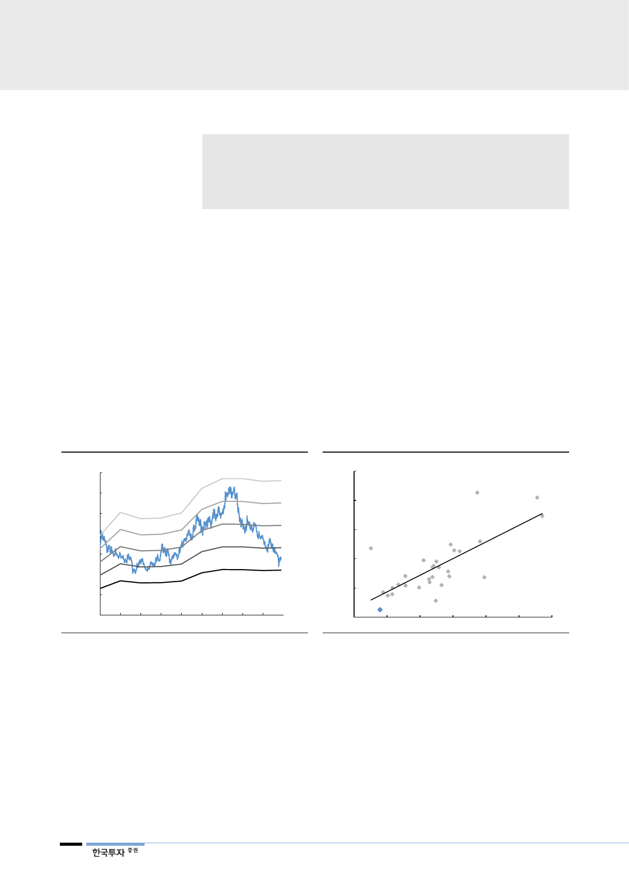

리포트 작성 목적
• 한국전력 주가 하락 배경 분석 및 반등 가능성 논리 제시
• 탈원전 선언 이후 에너지 전환 정책을 둘러싼 불확실성 요인 점검
• 전력시장 패러다임 전환의 과도기에 숨겨진 투자 기회 분석하고 한국전력에 대
해 ‘매수’ 의견으로 분석 재개
I. Executive Summary
한전의 밸류에이션은
역사적 저점으로 추락
1. 유틸리티 업종 우려 속에 보이는 기회
한전 주가가 하염없이 하락하고 있다. 올해 들어서도 28% 빠졌다. 현 주가는
2019F PBR 0.25배에 불과하다. 낮은 ROE와 높은 정책 불확실성을 감안해도
글로벌 유틸리티업체 대비 크게 저평가받고 있다. 역사적 저점마저 지나고 있는
데, 유례없는 탈원전 리스크로 바닥을 가늠하기 어렵다. 원전이용률 하락으로 실
적도 악화되는데 유가상승에 따른 비용부담을 전기요금에 반영할 수 있을지 불분
명하다. 에너지 전환의 과도기에서 유틸리티 업종에 대한 불신이 큰 상황이다.
[그림 1] 한전 주가의 PBR은 역사적 저점
(원)
70,000
60,000
50,000
40,000
30,000
20,000
0.6x
0.5x
0.4x
0.3x
0.2x
10,000
0
10 11 12 13 14 15 16 17 18
자료: Quantiwise, 한국투자증권
[그림 2] 글로벌 유틸리티 업체 대비 저평가
(2018F PBR, 배)
5.0
4.0
SSE
Severn
Trent
E.ON
3.0
GE
Dominion
Resources
장강전력
2.0
EDF Duke 한전KPS RWE AG
1.0
주부전력 Energy
간사이전력
0.0
0
한국전력
5
10
(2017~19F ROE 평균, %)
15
20
25
30
주: 11월 23일 종가 기준
자료: Bloomberg, 한국투자증권
탈원전에 대한 신중론
입장도 들어보자
하지만 정부의 탈원전 목표는 에너지 정책의 전부가 아니다. 아직 원전을 대체할
만한 대안이 없는 것이 현실이다. 원전 축소 기조에서 한발 물러선 일본과 프랑스
처럼 우리나라도 유가상승, 탄소배출량 저감 등 현실적인 과제를 외면하기 어렵
다. 현 정부 초기 원전 축소에 치우쳤던 에너지전환 정책은 8차 전력수급계획을
거쳐 경제성과 환경에 대한 고민 역시 반영하기 시작했다. 2030년 에너지 구상은
기존 공약대로지만, 2023년까지 원자력 발전은 오히려 확대된다. 상반기 원전이
용률은 이미 반등해 한전의 실적도 회복되고 있다. 주가가 역사적 저점까지 하락
한 현 시점에서 탈원전에 대한 우려가 과도하지 않았는지, 정부의 에너지 정책은
불변할 것이란 가정 때문에 놓치고 있는 기회가 없는지 점검해 볼 필요가 있다.
2